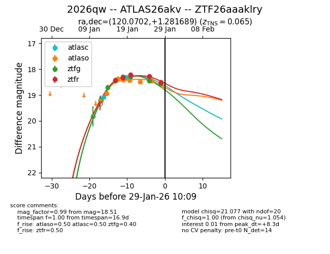
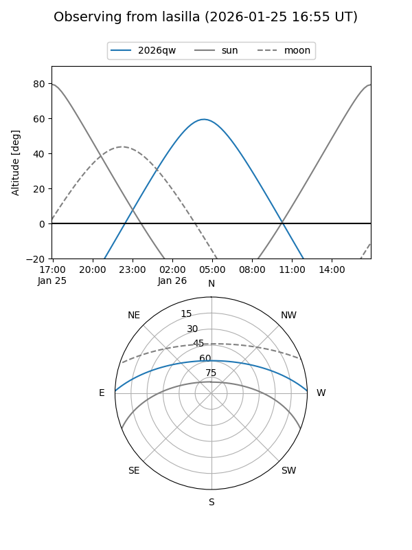
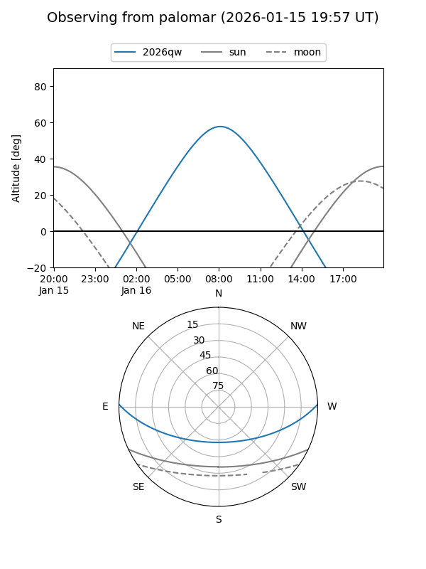
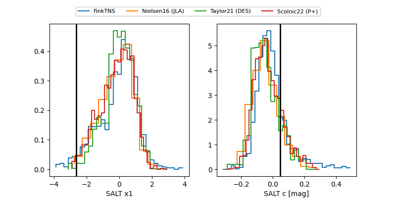

2026qw
Target 2026qw at 2026-01-27 02:41
Aliases and brokers:
FINK: link
Lasair: link
ALeRCE: link
TNS: link
YSE: link
alt names
ZTF26aaaklry (ztf,fink_ztf)
2026qw (tns,yse)
ATLAS26akv (atlas)
Coordinates:
equatorial (ra, dec) = 120.0702,+1.28169
equatorial (HMS+DMS) = 08:00:16.86,+01:16:54.08
galactic (l, b) = (219.7972,+15.87085)
Flags:
confirmed ia
Photometry:
last atlasc=18.31, atlaso=18.48, ztfg=18.45, ztfr=18.28
2 atlasc, 6 atlaso, 5 ztfg, 4 ztfr detections
Lightcurve

Visibility


Additional plots
